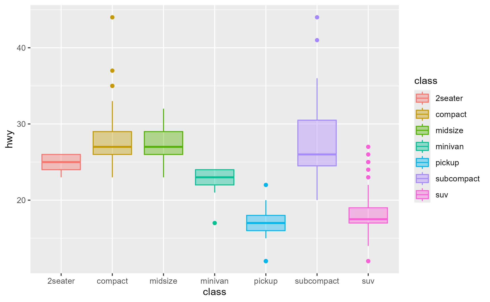

Capture a snapshot of a ggproto method's execution environment
Source:R/workflows-capture.R
ggtrace_capture_env.RdCapture a snapshot of a ggproto method's execution environment
Arguments
- x
A ggplot object
- ...
Passed to
ggtrace(). Themethodto capture should be specified here.- at
The position in the method body when the environment should be captured. Defaults to
1L, which is at the start of the method's execution.
Examples
library(ggplot2)
# Example from https://ggplot2.tidyverse.org/reference/aes_eval.html
after_scale_plot <- ggplot(mpg, aes(class, hwy)) +
geom_boxplot(aes(colour = class, fill = after_scale(alpha(colour, 0.4))))
after_scale_plot

# `after_scale()` is resolved by `Geom$use_defaults` (at Step 6)
before_applying <- ggtrace_capture_env(
x = after_scale_plot,
method = Geom$use_defaults,
at = 1 # To be more specific, do `at = 6`
)
after_applying <- ggtrace_capture_env(
x = after_scale_plot,
method = Geom$use_defaults,
at = -1 # To be more specific, do `at = 7`
)
colnames(before_applying$data)
#> [1] "colour" "ymin" "lower" "middle" "upper"
#> [6] "ymax" "outliers" "notchupper" "notchlower" "x"
#> [11] "flipped_aes" "PANEL" "group" "ymin_final" "ymax_final"
#> [16] "xmin" "xmax" "xid" "newx" "new_width"
colnames(after_applying$data)
#> [1] "fill" "colour" "ymin" "lower" "middle"
#> [6] "upper" "ymax" "outliers" "notchupper" "notchlower"
#> [11] "x" "flipped_aes" "PANEL" "group" "ymin_final"
#> [16] "ymax_final" "xmin" "xmax" "xid" "newx"
#> [21] "new_width" "weight" "size" "alpha" "shape"
#> [26] "linetype"
library(dplyr)
#>
#> Attaching package: 'dplyr'
#> The following objects are masked from 'package:stats':
#>
#> filter, lag
#> The following objects are masked from 'package:base':
#>
#> intersect, setdiff, setequal, union
before_applying$data %>%
select(any_of(c("colour", "fill")))
#> colour
#> 1 #F8766D
#> 2 #C49A00
#> 3 #53B400
#> 4 #00C094
#> 5 #00B6EB
#> 6 #A58AFF
#> 7 #FB61D7
after_applying$data %>%
select(any_of(c("colour", "fill")))
#> colour fill
#> 1 #F8766D #F8766D66
#> 2 #C49A00 #C49A0066
#> 3 #53B400 #53B40066
#> 4 #00C094 #00C09466
#> 5 #00B6EB #00B6EB66
#> 6 #A58AFF #A58AFF66
#> 7 #FB61D7 #FB61D766
identical(
before_applying$data %>%
select(any_of(c("colour", "fill"))) %>%
mutate(fill = alpha(colour, 0.4)), #< after_scale() logic here
after_applying$data %>%
select(any_of(c("colour", "fill")))
)
#> [1] TRUE